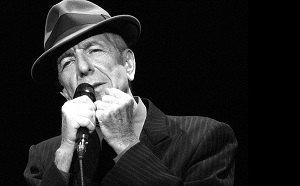

Personal life

Leonard Cohen was born in 1934 in Canada. He was a singer, musician, poet and novelist. He was born to an orthodox jewish family and his family had roots in Europe. He studied music and photography and taught himself how to play an acoustic guitar. He formed a country-folk band but later switched to playing the classical guitar. He attended university and and was part of a debate team and won some literary awards for some the songs that he wrote, some of which became very famous later on in his life.
Musical Career
initially Leonard tried to become a write. During his time in university he won some awards and published his writings in various magazines. He published his first book if poetry in 1956 which contained songs that he wrote between the ages 15 -20. Cohen completed his undergraduate degree and spent

some time in the US where he attended Colombia University but eventually left New York and went back to Canada. Disappointed with his lack of success he moved back to the US to pursue a career as a singer - songwriter. His song "Suzanne" became a big hit and that granted him first appearance in television and from there his path to success was short. He signed a contract with Colombia Records and started releasing that became internationally successful. Throughout the years he released numerous albums that were very successful.Filmography
Cohen also participated in a few movies, most of which were documentaries. His deep, touching voice made him a sought after narrator and he contemplated launching a carrier in the field although his musical success precluded him from following that career. Some of his famous movies are:
- I Am a Hotel (1983), resident - written by Cohen.
- Leonard Cohen: Bird on a Wire - documentary directed during Cohen's 20-city European tour.
- Marianne & Leonard: Words of Love (2019)